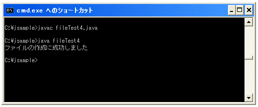
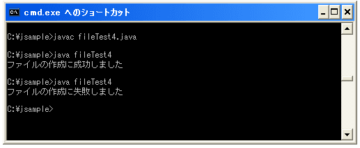

ファイルを作成する
今までは既にあるファイルに対しての操作でしたが、今後は新しいファイルを作成してみます。Fileクラスで用意されている"createNewFile"メソッドを使います。
createNewFile public boolean createNewFile() throws IOException
この抽象パス名が示す空の新しいファイルを不可分 (atomic) に生成します(そのファイルがまだ存
在しない場合だけ)。ファイルがあるかどうかのチェックや、ない場合のファイルの生成は、その
ファイルに影響を与える可能性のあるほかのすべてのファイルシステムの処理に対して不可分である
単一のオペレーションです。
戻り値:
指定されたファイルが存在せず、ファイルの生成に成功した場合は true、示されたファイルがす
でに存在する場合は false
例外:
IOException - 入出力エラーが発生した場合
SecurityException - セキュリティマネージャが存在し、セキュリティマネージャの
SecurityManager.checkWrite(java.lang.String) メソッドがファイルへの書き込みアクセスを
許可しない場合
作成しようとする新しいファイルが既に存在している場合は作成できません。
では作成方法を順を追って見ていきます。まずは作成しようとするファイル名でFileクラスのオブジェクトを作成します。
File newfile = new File("c:\\tmp\\newfile.txt");
上記では作成するファイルを絶対パスで指定していますが、今までのように相対パスで指定しても構いません。
次に作成したFileクラスのオブジェクトに対して"createNewFile"メソッドを実行します。
File newfile = new File("c:\\tmp\\newfile.txt");
newfile.createNewFile();
基本的には以上なのですが、"createNewFile"メソッドを使う場合には"IOException"という例外が発生する可能性があります。
例外と言うのはいずれ詳しく見ていきますが、簡単に書くとプログラムを実行中に発生する可能性があるエラーのことです。文法的に間違ったプログラムの場合は、コンパイルの時にエラーが表示されますが、文法的には間違っていなくてもプログラムの実行中に起こるエラーを例外といいます。
実行時にエラーが発生するとプログラムが強制終了してしまいます。いきなり強制終了すると困る場合がありますので、プログラムの実行中にエラーが発生した場合に強制終了させず、エラーが発生した時の処理を記述しておくことが出来ます。
実行時のエラーはこのメソッドに限ったことではないのですけど、必ず例外処理を記述しなければならないメソッドがあります。先ほどの"createNewFile"メソッドの説明文の最初の部分を見てください。
public boolean createNewFile() throws IOException
上記のように「throws IOException」が付いているメソッドは"IOException"という実行時エラーが発生する可能性があるので、必ず例外処理を記述しなさい、というメソッドになります。
では例外処理を付け加えた形で書き直してみます。
File newfile = new File("c:\\tmp\\newfile.txt");
try{
newfile.createNewFile();
}catch(IOException e){
System.out.println(e);
}
現時点ではあまり深く考えなくてもいいのですが、例外が発生しそうな記述をtry{}の括弧の中に記述します。このtry{}の中に書かれたプログラムを実行中に例外が発生すると、プログラムを強制終了させるかわりにcatch{}の中に書かれた処理を変わりに実行します。ここではエラーの内容を表示するだけにしています。
try{
// 例外が発生するプログラム
// 例外が発生するプログラム
// 例外が発生するプログラム
}catch(発生した例外1 変数){
// 例外1が発生した時の処理
}catch(発生した例外2 変数){
// 例外2が発生した時の処理
}
サンプルプログラム
では一度試してみましょう。
import java.io.File;
import java.io.IOException;
class fileTest4{
public static void main(String args[]){
File newfile = new File("c:\\tmp\\newfile.txt");
try{
if (newfile.createNewFile()){
System.out.println("ファイルの作成に成功しました");
}else{
System.out.println("ファイルの作成に失敗しました");
}
}catch(IOException e){
System.out.println(e);
}
}
}
上記をコンパイルして実際に実行してみると下記のようになります。

ファイルが作成されていることを確認しておいて下さい。また、IOExceptionを使いますのでプログラムの最初の部分で「import java.io.IOException;」が必要となります。
また続けて同じプログラムを実行すると、今度は作成しようとする新しいファイルが1回目のプログラムで作成されているので、2回目に実行するとファイルの作成に失敗します。

( Written by Tatsuo Ikura )

著者 / TATSUO IKURA
初心者～中級者の方を対象としたプログラミング方法や開発環境の構築の解説を行うサイトの運営を行っています。